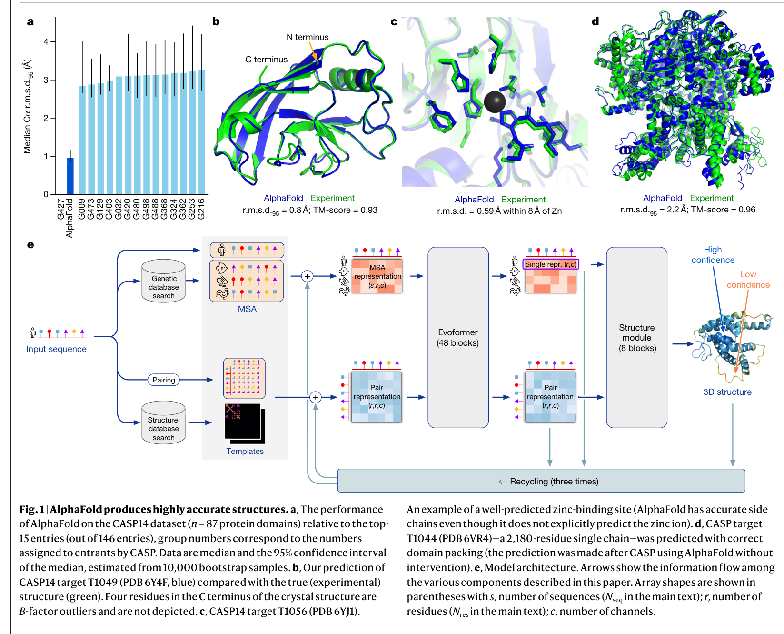
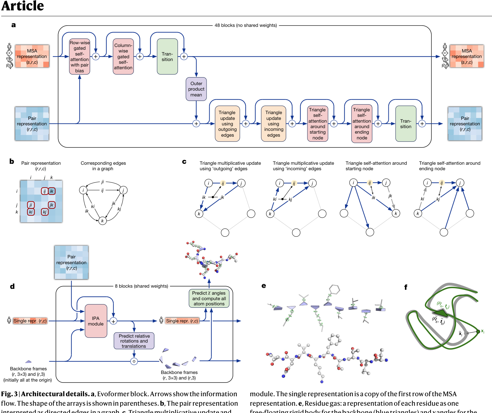
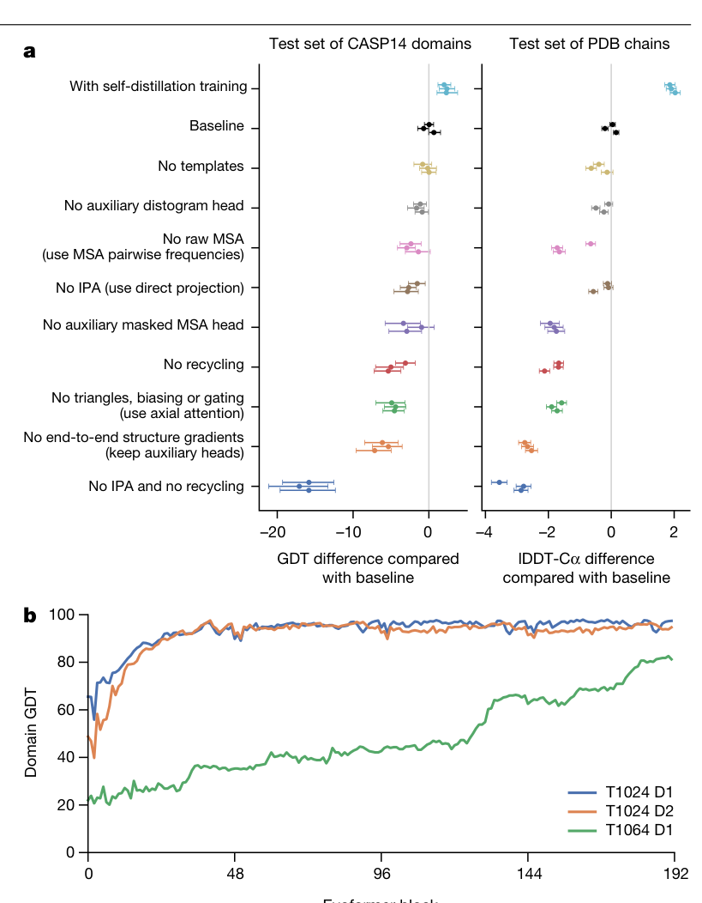
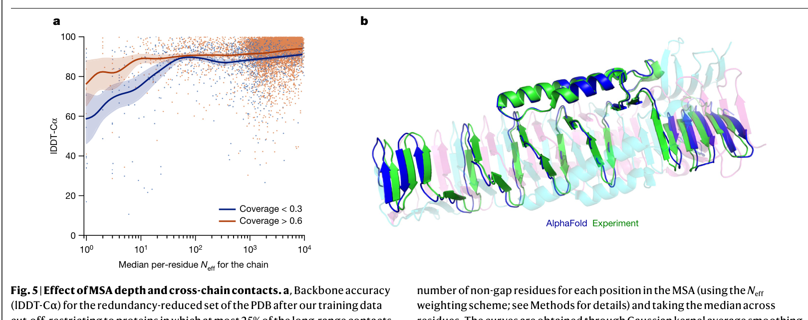

作者先把问题放在一个可量化的盲测场景中：CASP14的目标结构在评估时对参赛方法是未知的。AlphaFold在87个蛋白结构域上的中位骨架Cα rmsd95为0.96 Å（95%置信区间0.85–1.16 Å），下一名方法为2.8 Å；全原子rmsd95为1.5 Å，而最佳替代方法为3.5 Å。这个数字的意义不在于宣称‘所有蛋白都解决了’，而在于它改变了盲测中多数目标的精度量级。 [p.2]

作者随后把盲测结果放到近期PDB结构上检验：在去除高同源模板等条件后，3,144条链的整体中位骨架rmsd95为1.46 Å。pLDDT与真实lDDT-Cα近似线性（r=0.76），pTM与全链TM-score也相关（r=0.85）。这些相关性让置信度成为有用的可靠性提示，但它们仍是筛选测试集上的统计关系，不是对单个未知目标的无条件承诺。 [F02] [p.3]
输入由目标序列、同源序列形成的多序列比对（MSA）以及可用模板构成。Evoformer重复48个block，同时维护Nseq×Nres的MSA表征和Nres×Nres的pair表征。MSA的outer-product mean把进化关系写入pair表征，pair bias又回到MSA attention；triangle multiplicative update和triangle self-attention则围绕三角关系传播几何一致性。这里的关键不是组件名称，而是信息在进化证据与残基图之间往返流动。 [F01] [F03] [p.2] [p.4]

随后结构模块为每个残基维护旋转和平移frame，并用invariant point attention（IPA）在局部坐标中处理三维点。网络由这些frame迭代更新主链和侧链位置；FAPE在许多局部frame下比较预测与真实原子位置，使局部相对几何成为主要训练信号。作者还明确指出，结构模块并未硬约束肽键几何，立体化学违规主要在后续Amber relaxation中处理。 [F03] [p.4]
AlphaFold不是一次前向传播就结束：最终结构会反馈给相同模块，进行三次recycling。训练中以FAPE为主，同时使用中间结构损失、distogram、masked-MSA、侧链和结构违规等辅助目标；self-distillation又把大量无标签序列的高置信预测纳入训练。这样的设计把‘预测一个坐标’改造成‘在表示和几何之间持续精化’。 [F01] [F04] [p.2] [p.5]

主文把完整算法细节、伪代码、输入特征和训练细节指向Supplementary Methods。因而从正文可以准确理解设计逻辑和评价协议，却不应把六页主文误读成独立可执行的完整复现配方。 [p.8]
图4a不是把模型当作一个不可拆的黑箱：在CASP14域和PDB链两种测试集上，去掉self-distillation、raw MSA、distogram head、IPA、recycling、triangle更新/门控或端到端结构梯度都会带来不同程度的下降。这样的比较支持‘多种设计共同贡献’这一结论，也帮助读者把图3中的结构选择与真实性能联系起来。 [F04] [p.5]
但消融的结论应保持在证据允许的高度：它说明在这个训练和评估设置中，删除组件会损害表现，却不证明每个组件对应一个彼此独立、唯一的生物物理机制。不同组件可能存在补偿或交互，图4的轨迹也显示计算需求随目标而变。 [F04] [p.5]
作者专门把‘模型在哪里变差’作为一段结果，而不是把它藏在限制清单里。图5a显示，当MSA深度低于大约30条序列时，骨架准确度明显下降；超过约100条后，继续增加的收益变小。论文的解释是：早期结构假设需要足够的进化信息，而后续高精度精化不再同样依赖MSA深度。 [F05] [p.6]

因此，‘AlphaFold很准’需要补上条件：对于主要由异源跨链接触塑造形状的bridging domains，模型明显较弱；对于一个结构在PDB中呈现的特定条件，模型输出更接近‘最可能出现的结构’，而不是所有配体、离子和构象状态的完整集合。 [F05] [p.6]
全文的论证闭环由这个边界完成。作者把方法描述成生物信息学与物理/几何归纳偏置的结合：它从PDB数据中学习，同时尽量让网络处理结构约束。在实验应用上，这使分子置换、冷冻电镜图解释和大规模结构预测成为可能；但这些用途仍建立在输入信息和PDB条件可代表目标状态的前提上。 [p.6]
读者因此应区分三层结论。第一层是有强统计支持的结构精度：CASP14和近期PDB链上的数字很有说服力。第二层是有干预和轨迹支持的计算解释：架构组件确实影响结果，但内部机制仍非完全可识别。第三层是尚未被这些实验解决的生物学问题：配体、离子、构象变化、完整复合体和功能机制不能由高置信度结构自动推出。 [F01] [F02] [F04] [F05] [p.2] [p.3] [p.5] [p.6]
当前稿件引用了 0 条主张、0 组图表和 0 张数据表。
页面锚点：p.1